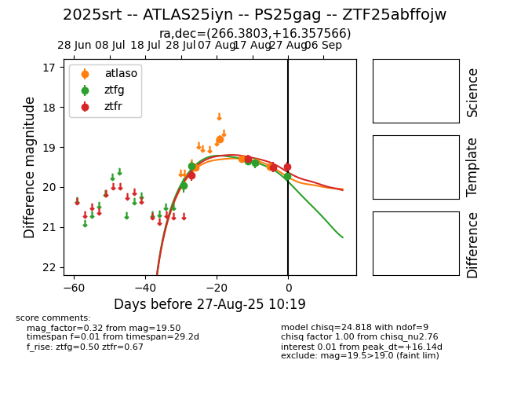

Target 2025srt at 2025-08-26 20:57, see:
FINK: fink-portal.org/ZTF25abffojw
Lasair: lasair-ztf.lsst.ac.uk/objects/ZTF25abffojw
ALeRCE: alerce.online/object/ZTF25abffojw
TNS: wis-tns.org/object/2025srt
YSE: ziggy.ucolick.org/yse/transient_detail/2025srt
alt names
ZTF25abffojw (ztf,fink)
2025srt (tns,yse)
ATLAS25iyn (atlas)
PS25gag (panstarrs)
coordinates:
equatorial (ra, dec) = (266.3803,+16.35757)
galactic (l, b) = (40.7623,+21.75635)
photometry
last atlaso=19.48, ztfg=19.39, ztfr=19.50
5 atlaso, 4 ztfg, 3 ztfr detections
